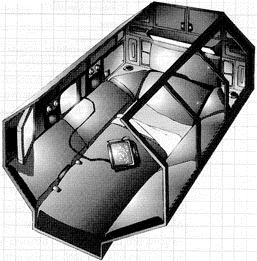
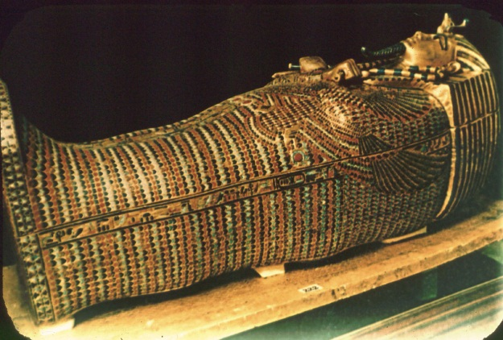

Προτιμήστε μας για τις τελευταίες στιγμές της ύπαρξής σας πάνω στη γη. Προσφέρουμε άριστες υπηρεσίες για την στερνή σας ανάπαυση. Τα φέρετρά μας είναι ξεκούραστα, με πουπουλένια μαξιλαράκια και οικολογικό μαόνι.
Η λίστα μας μεγαλώνει καθημερινά. Κλείστε μία θέση σήμερα! Επικοινωνήστε
Ικανοποιούμε κάθε ανάγκη σας. Από αιγυπτιακούς τάφους και μουμιοποίηση, μέχρι φέρετρα high-tech με πρόσβαση στο Internet «υπογείως».

